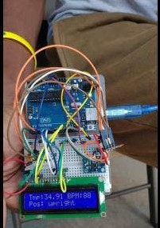
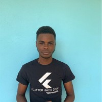

UWI student develops healthcare gadget
April 29, 2020 by Javier

Second-year University of the West Indies student Javier Bryan, 20, has been developing a device that is able to
remotely monitor a person's vital signs. Bryan, who is reading for a Bachelor of Science degree in electronics and
computer science, started creating the machine after COVID-19 reached Jamaica.
Bryan, who resides in Water Lane, Clarendon, says the machine is not yet completed and is still in the 'prototyping'
phase. The Glenmuir High graduate said that he has spent plenty of time honing his skills by working on other similar
projects. Bryan said that if he's given the opportunity to produce more of the devices, he would gladly take up
the task.
2019 Calico Challenge Participant
May 1, 2019 by Javier

My name is Javier Bryan, an aspiring robotics engineer. I attended Glenmuir High School and I am currently a first
year student attending the University of the West Indies (UWI), Mona, pursuing a Bachelor’s degree in Computer
Science and Electronics.
I am very grateful to be selected to be a student participant in the fourth annual Calico Challenge. I have always
had a passion for computer programming ranging from embedded systems programming to game development and also mobile
and web development. I was very excited when I got word of a program that seeks to promote growth and allow students
to gain valuable experience in the field during the summer holiday. This will be my first time participating in and
contributing to an open source project and I really look forward to the experience.